内容要点
「御成萌新君」以深度玩家视角，把富士 X100VI 的十个机身设定连招串成一条可照做的清单：从数码远摄增距镜与控制环自定义，到胶片模拟包围、多重曝光、对焦拨杆与视频入口，再到收音孔位、传图、展馆静音与自动 ISO 收窄。口播 ASR 把机型误识别为「X160代」，正文一律按标题与画面校正为 X100VI。
知识结构
数码远摄增距镜 50/70；控制环当 FN；胶片模拟包围一次三色。
多重曝光先平均；M/C/S 分场景；Drive→动画进视频。
热靴前机身麦+2.5mm；读卡器优先；关提示音；收窄自动 ISO。
X100VI 的「奇妙」多半来自把隐藏菜单与物理拨杆用满：先扩展焦段与自定义环，再给色彩/曝光留安全垫，最后用静音与自动 ISO 提高出门成功率。
00:00–01:31连招 1–3：增距镜、控制环、胶片模拟包围
开场直接亮出带章节条的 X100VI：本期不是新机开箱，而是十个「机身进阶设定」。第一招针对定焦焦虑——打开数码远摄增距镜（画面菜单文案），可把约全画幅 35mm 等效视角裁切到 50mm、70mm，并可放到喜欢的快捷键上，立刻增加构图弹性。
第二招纠正常见误解：镜头控制环不只是对焦环，富士把它做成第二枚 FN。在「按钮/拨盘设置」里把控制环映射到白平衡、胶片模拟、增距镜等，转环即调，少钻菜单。第三招给色彩选择困难症：开启胶片模拟包围，预设三种模拟，按一次快门保留三张不同色彩，留下喜欢的即可。
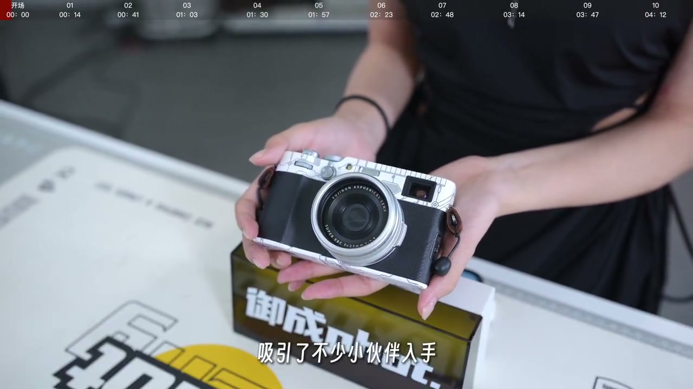
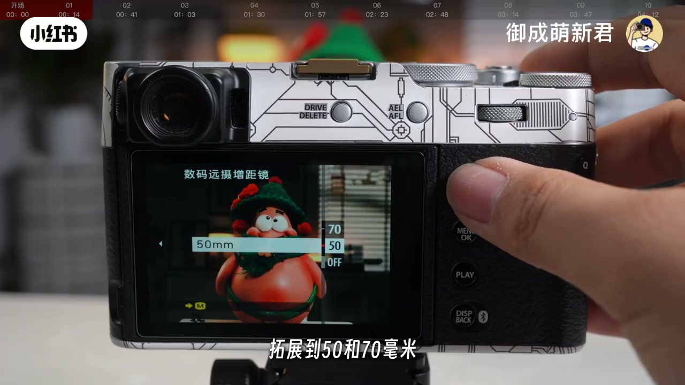
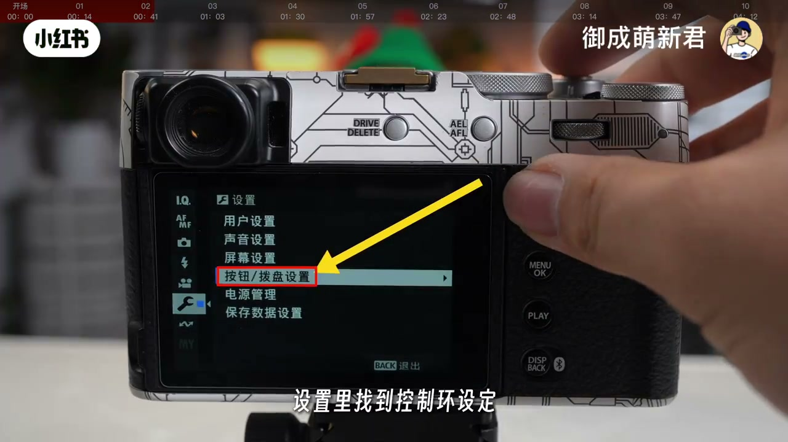
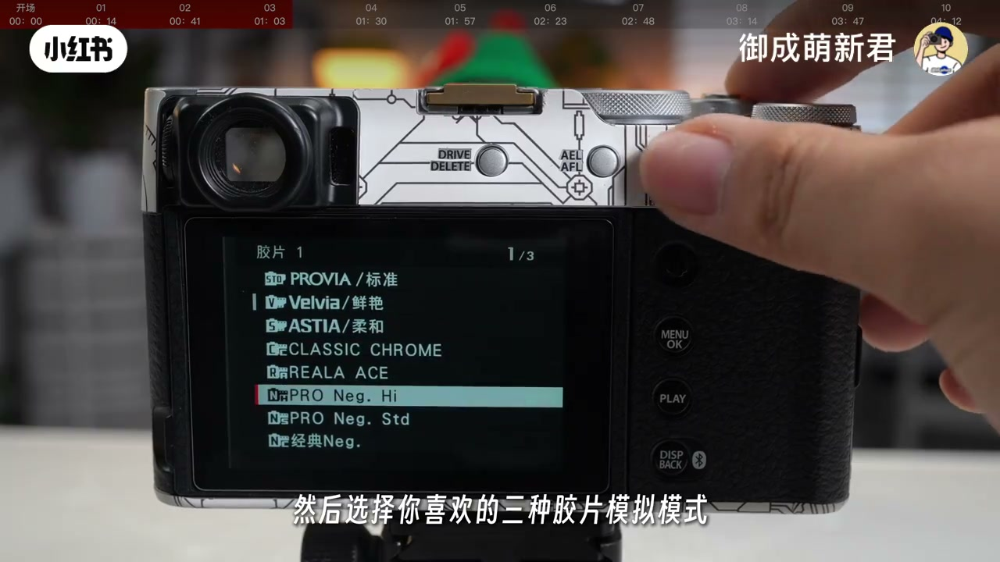
01:31–02:51连招 4–6：多重曝光、对焦拨杆、视频入口
第四招走创意：按机背 Drive，选多重曝光，可见多种合成模式；作者建议前期先用「平均」，一次拍两张，机身自动合成。技巧是两张曝光差要明显，效果才跳。第五招看机身左侧拨杆：M 手动、C 连续、S 单次——静物优先 S，人像或宠物优先 C；对焦范围他更爱全局，省力。
第六招给新手找视频开关：仍从 Drive 进入，选「动画」即进视频模式，快门开始录。提醒：视频与静态的设定可以相同也可以不同，拍前要分清当前配置，避免「照着拍照参数开录」踩坑。
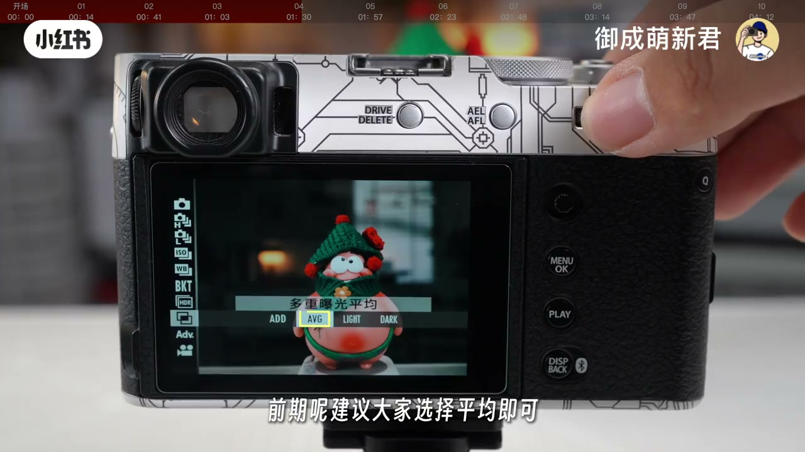
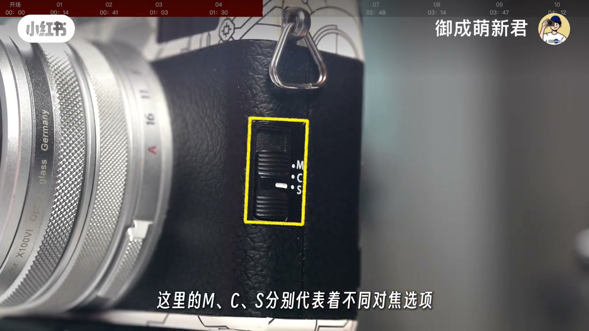
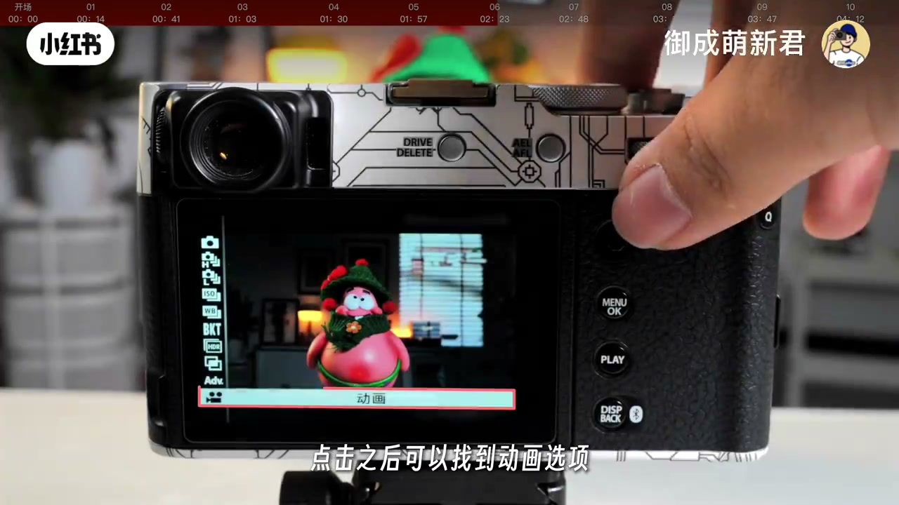
02:51–04:43连招 7–10：收音、传图、静音、自动 ISO
若把 X100VI 当拍摄机，第七招盯收音：机身麦克风在热靴前方的小孔，拍摄时别遮挡；机身右侧还有 2.5mm 口可接更专业的外置麦。第八招谈传图：作者更倾向手机读卡器直接读 SD，更快也更稳；没有读卡器再用 USB/无线连接手机，并提到在网络设定里把 USB 电源设为自动或「电源关、通信开」一类模式（以机身菜单为准）。
第九招面向美术馆/展览：进入声音相关设定，把 AF 提示、录制起停声、操作音、自拍与回放音关掉，快门音量调低，减少扰人。第十招收窄自动 ISO：默认 125–12800 太宽，可改为约 125–1600（最大感光度也可收到 6400），并把最低快门速度设在约 1/50 秒，提高手持成功率。
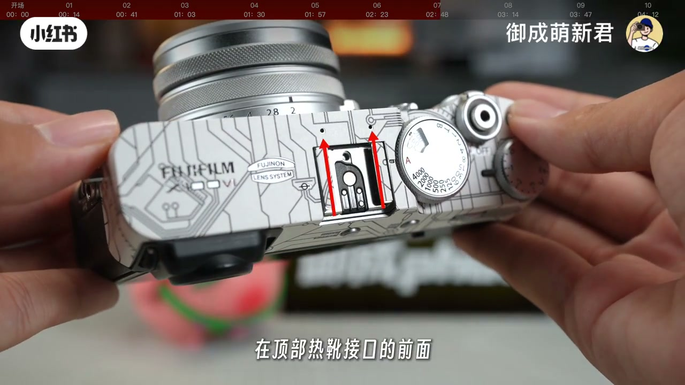
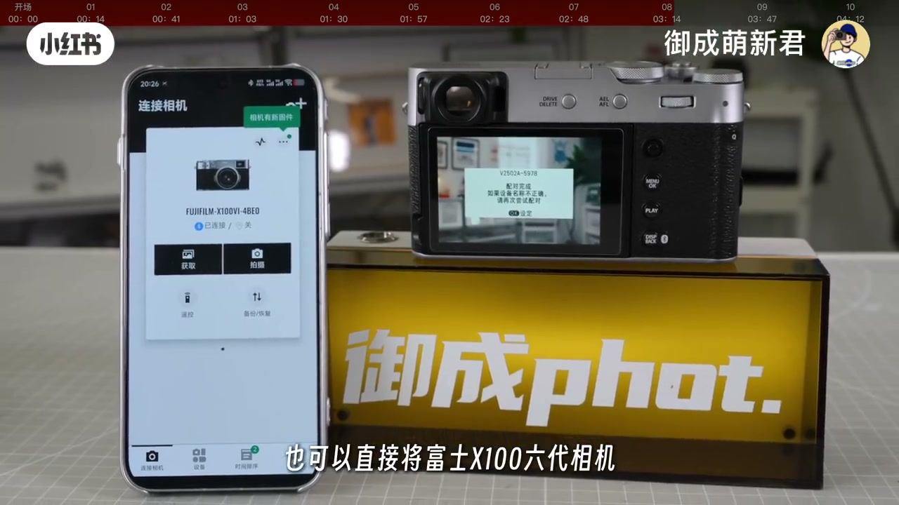
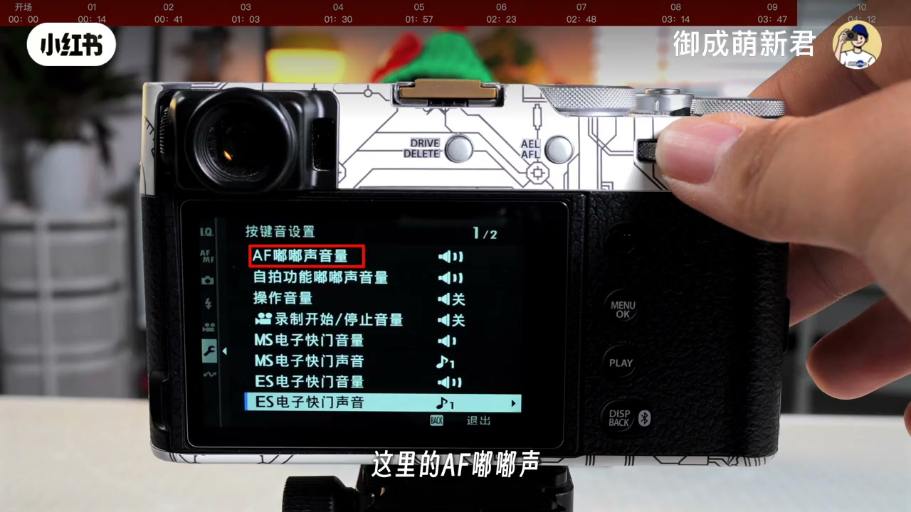
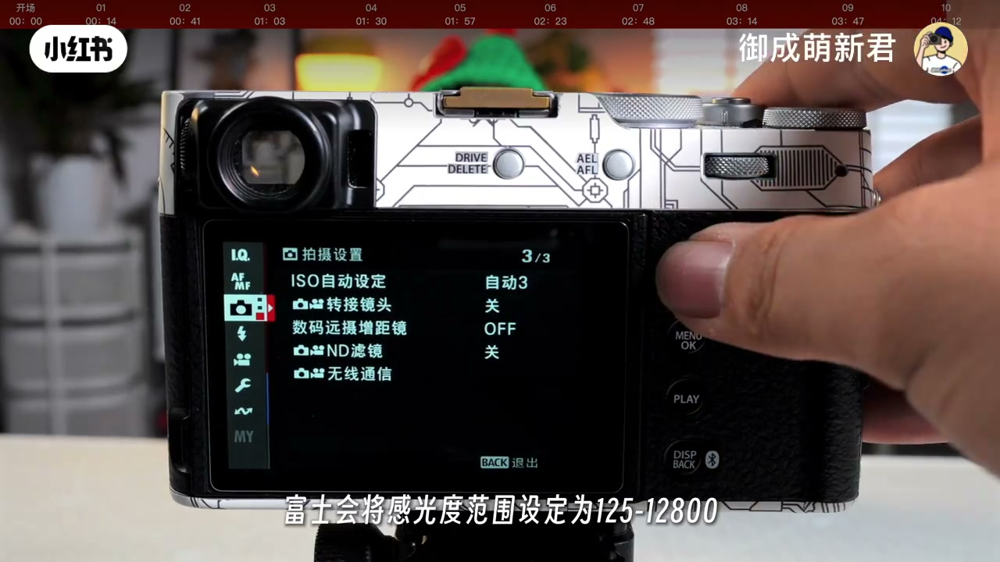
详细文字转录
以下内容按 Whisper 原始分段完整呈现，可能包含识别误差（通篇「X160代」应为 X100VI）。共 116 段。
富士X160代上市以来就凭借着独特的定位吸引了不少小伙伴入手
那这期萌新军节目我们就作为深度玩家
为大家分享10个关于富士X160代的机身进阶设定技巧
第一 利用机内裁切获得50和70毫米更长的焦段
虽然富士X160代搭配的是定焦镜头
但可以通过机身内部数码远摄增具镜功能
通过裁切获得更长焦段的视觉效果
在X160代菜单中可以找到数码远摄增具镜选项
你可以把它设定在你喜欢的任何快捷键位置
这样可以将X160代的焦段从单一的全画幅35毫米视角
拓展到50和70毫米 大大增加了拍摄的灵活性
第二 巧用富士X160代的镜头控制环
很多小伙伴会把富士X160代的镜头控制环习惯理解为对焦环
其实富士将它作为了X160代的第二个FN自定义快捷键
你可以在富士的机身菜单按钮拨盘设置里找到控制环设定
然后将其设定为白平衡调整 胶片模拟模式
数码远摄增具镜等等调整起来非常的方便
第三 打安全牌的胶片模拟包围
许多小伙伴在刚开始使用富士相机拍摄时
容易对胶片模拟模式陷入选择困难症
玉成君给大家分享一个小技巧
启用富士X160代机身的胶片模拟包围就可以解决这个问题
在拍摄的设置菜单中可以找到胶片模拟包围选项
然后选择你喜欢的三种胶片模拟模式
这样按下一次快门
你的相机会保留三种不同色彩风格的照片
选择你喜欢的留下就好
在富士X160代机身上
支持了非常具有拍摄想象力的多重曝光功能
按下机身背后的Drive按键
在驱动模式菜单中选择多重曝光
这里会有四种不同的合成模式
前期建议大家选择平均即可
然后你可以一次拍摄两张不同的照片
富士的X160代将自动帮你进行多重曝光底片的合成
建议大家拍摄时多尝试
第一张和第二张照片要有明显的曝光差别
效果更加的突出
第五 巧妙利用不同对焦模式的设定
在富士X160代机身左侧
你可以看到一个滑动按键
这里的M、C、S分别代表着不同对焦选项
M代表着手动对焦
C是连续自动对焦
S是单次对焦
如果大家拍摄不会移动的静物
可以优先S单次对焦
但如果拍摄人像或者是可爱猫猫
建议使用C连续对焦
对焦范围选择上
郁成君比较喜欢全局对焦
这样拍摄时更加的省力
第六 使用富士X160代进行视频拍摄
许多富士老用户都知道该如何选择视频拍摄
但新人来说这个功能隐藏的就有点深
在机身背后有一个Drive按键
点击之后可以找到动画选项
这时候富士的X160代就进入了视频功能模式
按下快门键就可以开始录制视频
要注意的是
视频录制和静态图片拍摄的设定
是可以相同的 也可以不同
大家在拍摄时请注意区分它们的区别
有一些博主会将富士X160代
作为自己的拍摄用机
这里注意两个收音的关键点
第一是富士X160代的机身收音麦克风
在顶部热学接口的前面
这两个小点就是麦克风接口
注意拍摄时不要掩盖或者遮挡
避免影响拍摄时的音质
另外就是可以通过机身右侧的外部接口
通过2.5毫米麦克风接口
连接更加专业的外部麦克风进行录音
另外就是可以直接连接到
富士X160代机身的照片
快速传输进手机或电脑里
育成君自己更倾向于
使用手机可用的读卡器
直接将相机中的SD卡连接至手机
这样更加的安全 也更加的快速
但如果没有读卡器
也可以直接将富士X160代相机
连接你的苹果或安卓手机
这里要注意的是
在机身网络设定菜单中
将USB电源选项设为自动
或者是电源关通信开模式
一般目前的手机
都可以直接连接富士X160代的机身
App直接进行无线传输
第九 自定义富士X160代的声音设置
在许多美术馆或者是展览馆中拍摄
相机自身的对焦判定和快门声音
可能会引起周边人们的注意
可以提前在富士X160代小班手设定菜单中
找到按键音设置
把这里的音量都进行调整
设定为关闭即可
这里的AF嘟嘟声
录制开始停止声音
操作音量 自拍功能 回放音
都可以关闭
快门声音的话可以选择低就可以
最后 第十个 自动感光度的设定
富士X160代机身画质相当的出色
但曝光设置时会比较麻烦
我们建议将ISO感光度设定为自动模式
但是设定的范围建议大家有所调整
默认情况下
富士会将感光度范围设定为125-12800
这个范围明显会有点大
可以考虑手动调整为125-1600即可
最大感光度可以设定为6400
最低快门速度建议设定在五十分之一秒
这样会大大提高你拍摄时的成功率